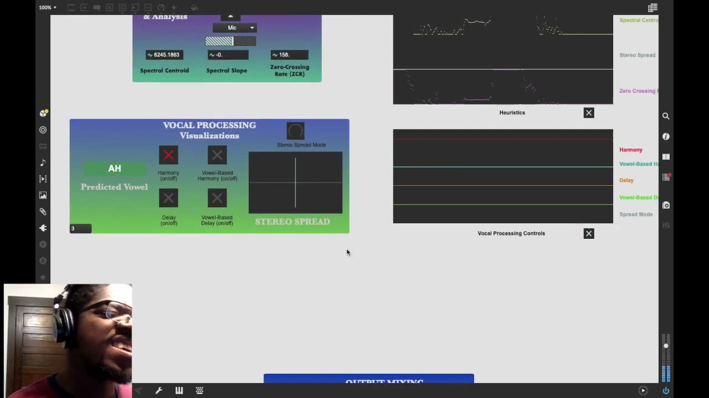

Vocal PerFormants
Vocal PerFormants
1. PubPub Link
https://nime.pubpub.org/pub/eb59862z/draft?access=lmijwcdv
2.Conference Abstraction
With its vast timbral range, the human voice provides an immense world of possibilities in electroacoustic music. Despite the rich history of live vocal feature extraction, existing work frequently puts more focus on complex vocal sounds and textures, while engaging very little with the core fundamentals of standard vocalization – namely, the five primary singing vowels. This provided the motivation for my newly designed software performance system, Vocal PerFormants (VPF), built in Max 8 with Wekinator’s machine learning models to predict which of five vowels the performer is singing, based on a series of audio features and spectral descriptors of the performer’s singing voice. The predicted vowel, along with the raw audio features themselves, are then used to control various parameters of live input processing, including harmonization, delay time (with feedback), and stereo spread.
3.Requirements (optional, especially for the performance on-site)
If accepted, I would submit a pre-recorded performance video (similar to the one attached in the “Media” section) to be made publicly available for the conference. As such, no live performance setup would be required.
4.Program Description
With its vast timbral range, the human voice provides an immense world of possibilities in electroacoustic music. Despite the rich history of live vocal feature extraction, existing work frequently puts more focus on complex vocal sounds and textures, while engaging very little with the core fundamentals of standard vocalization – namely, the five primary singing vowels. This provided the motivation for my newly designed software performance system, Vocal PerFormants (VPF), built in Max 8 with Wekinator’s machine learning models to predict which of five vowels the performer is singing, based on a series of audio features and spectral descriptors of the performer’s singing voice. The predicted vowel, along with the raw audio features themselves, are then used to control various parameters of live input processing, including harmonization, delay time (with feedback), and stereo spread.
Using this system, I then composed and recorded vocal improv compositions, which juxtapose the instrument’s response to the core vowels in relation to more “complex” vocal sounds such as diphthongs, vocal fry, and unpitched breathy sounds. The resulting piece yields a hauntingly compelling sound world using vocal feature extraction and spectral analysis for intelligent voice processing, and also highlights a notion of aestheticizing “errors” in classification.
5. Media

▶6. ACKNOWLEDGEMENTS
I would like to thank Dr. Eli Stine for his mentorship with designing this project!